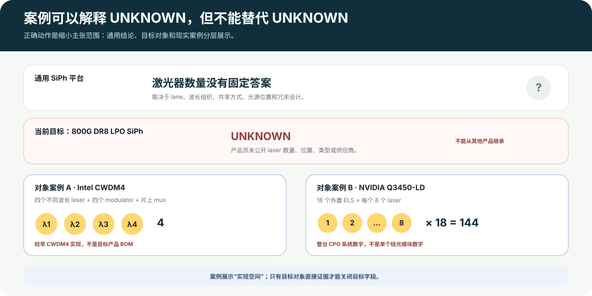

对象级案例目标字段仍为 UNKNOWN
Case-bounded explanation
UNKNOWN 不是空白：用现实案例说明“可能怎么做”
这里采用降阶解释：不把案例升级成通用答案，也不跨产品补齐目标对象。每张卡都同时写明观察对象、直接事实和不可外推边界。

参考图 4 · 案例扩展实现空间，但不能继承为目标产品答案。点击查看原图。
通用回答硅光没有固定的激光器数量
数量取决于光 lane、波长组织、光源位置、共享方式和冗余设计；“采用 SiPh”本身不能推出一个数字。
当前目标对象800G DR8 LPO SiPh：仍未知
Hyper Photonix 产品页确认 DR8、LPO 与 SiPh，但未公开内部 laser 的数量、位置、器件类型或供应商，因此不能从其他产品继承。
产品实现案例Intel CWDM4：四波 + 片上复用
公司技术资料描述四个不同波长的激光器、四个调制器和一个光复用器集成在一块 silicon die 上。
它说明：WDM 可以采用片上集成路径，不必然依赖分立 mux。
不可外推：不是 800G FR4-500 BOM，也不能填补目标 800G LPO SiPh 的激光器数量。
Intel 技术资料 ↗
精确系统案例NVIDIA Q3450-LD：外置激光源
官方技术与维修资料披露 18 个 ELS，每个 ELS 含 8 个激光器，系统合计 144 个。
它说明：硅光 CPO 可以把光源放到可维护的外置 ELS，并按系统规模配置多个光源模块。
不可外推：144 是该 exact system 的系统级数字，不是“每个硅光模块需要 144 个 laser”，也不证明无损冗余。
NVIDIA 维修资料 ↗
相反实现并存WDM mux：分立与集成都可以
Coherent Z-block 是分立滤光式 mux/demux 产品；Intel CWDM4 展示片上 optical multiplexer。
它说明：FR/WDM 要求的是“合分波功能”，不是某一种固定器件。
不可外推：目标 FR4-500 使用 AWG、TFF、Z-block 或片上 mux 仍然 UNKNOWN，不能据此推算对准次数与良率。
Coherent Z-block ↗
反例案例WDM 不等于必须使用 TEC
Coherent 的 1300 nm CWDM4 DFB die 产品声明为 uncooled，并给出 0–75 °C 的产品边界。
它说明：在给定波长窗口、器件分档和热设计下，可以存在无 TEC 的 CWDM 路径。
不可外推：这不是完整 200G/lane FR4-500 模块，不能证明所有 WDM 产品都无需 TEC。
Coherent DFB datasheet ↗
NPO 案例GIGALIGHT：插座式光引擎 + 外置光源
公司公告描述 socket-based、flip-chip bonding 的 1.6T DR16 NPO linear SiPh engine，以及 16-channel CWL 外置光源。
它说明：NPO 可以同时选择线性电架构、插座连接、硅光和外置光源。
不可外推：“16-channel source”不能自动换算成 16 个独立 laser；插座也不自动等于现场可更换。
GIGALIGHT 公告 ↗
跨对象对照NPO/CPO 的连接与维修没有统一答案
Lightmatter L20 描述 BGA/reflow；GIGALIGHT 描述 socket；Broadcom 支持 remote laser module；NVIDIA 提供 ELS 的带电维修流程。
它说明：placement、attach、laser location 与 service workflow 是四条独立选择轴。
不可外推：CPO 不自动等于不可维修，NPO 也不自动等于可热插拔；必须回到 exact object。
Lightmatter L20 ↗
阅读规则：案例只扩展“实现空间”，不替代目标对象答案，不代表默认方案、市场份额或供应关系。后续拿到目标产品 datasheet、teardown、CMIS dump 或维修文档时，再升级相应字段。
速率层对象观察内部路线排序阻断
Live baseline
“最主流的方案是什么？”目前只能回答到两层
“主流”必须带日期和分母。本轮固定为：2026-08-26、全球 AI 数据中心、800G、约 500m、前面板可插拔、单位出货份额。
可以回答 · 速度层级800GbE 已是高速数据中心模块的主流速率
Cignal AI 的公开信息支持：2026 年一季度 400G 及以上高速模块接近 2000 万只，800GbE 占多数。但它没有公开 800G 内部技术路线的统一统计口径。
暂时不能回答 · 内部路线份额
暂无统一统计口径
- 重定时 EML：有具体产品证据，但没有同口径市场份额
- 重定时硅光：当前材料只有使用 DSP 的硅光演示，无法完整确认电架构
- LPO 硅光：有具体产品页面，但不能据此推定出货规模；份额未知
关闭 UNKNOWN 需要：同一时间、市场、速率、距离、放置方式和单位出货量口径，能拆出 EML/SiPh 或 retimed/LPO/LRO，并保留表号、页码或快照哈希。到那时才允许判断 leader / co-mainstream。